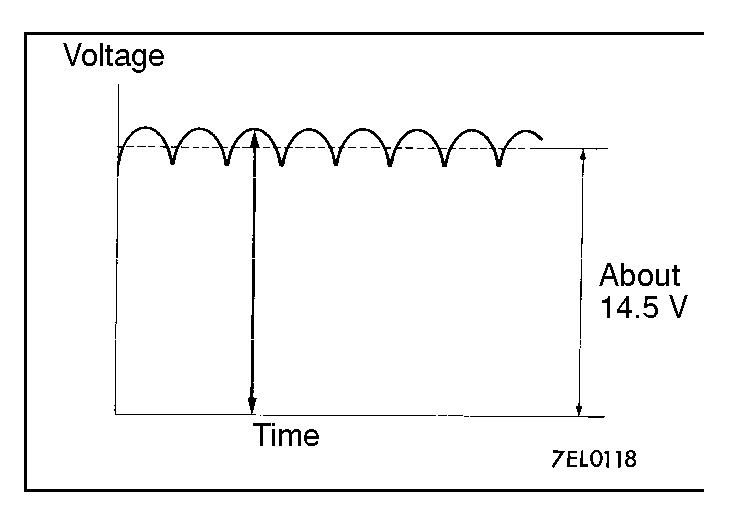
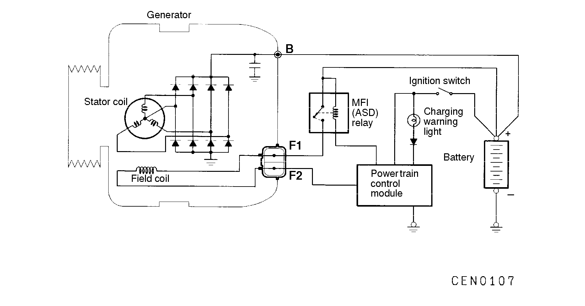

![[Previous]](https://mitsubishitechinfo.com/data/F24S/BUTTONS/fprevg.png)
![[Next]](https://mitsubishitechinfo.com/data/F24S/BUTTONS/fnextg.png)
CHARGING SYSTEM <2.0L ENGINE (NON-TURBO)>
GENERAL INFORMATION
The charging system uses generator output to keep the battery charged at a constant level under various electrical loads.
GENERATOR SPECIFICATIONS
|
Items |
Specifications |
| Identification No. |
A002T81292 |
| Part No. |
M04661998 |
| Rated output |
90 A |
|
|

|
OPERATION
Rotation of the excited field coil generates AC voltage in the stator.
This alternating current is then rectified through diodes to produce DC voltage. Refer to the waveform shown in the illustration at left.
The average output voltage fluctuates slightly with the generator load condition. |
|
When the MFI relay (ASD relay) is on and the control circuit is grounded by the powertrain control module (PCM), current flows to the field coil, initial energization of the field coil. The stator coil starts to generate power after the engine is started.
The generator output voltage rises as field current increases and falls as field current decreases.
Accordingly, when the battery positive voltage reaches target voltage value, the PCM turns the field current off. When the battery positive voltage is below target value*, the PCM turns the field current on to maintenance generator voltage at a constant level. If the field current is constant, the generator output voltage will increase along with increases in engine speed.
*: The target voltage is programmed in the PCM according to battery temperature.
